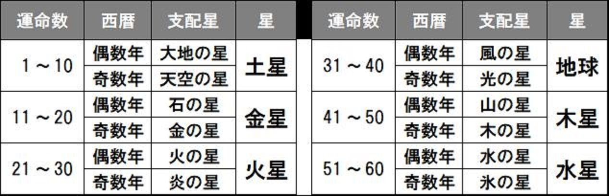
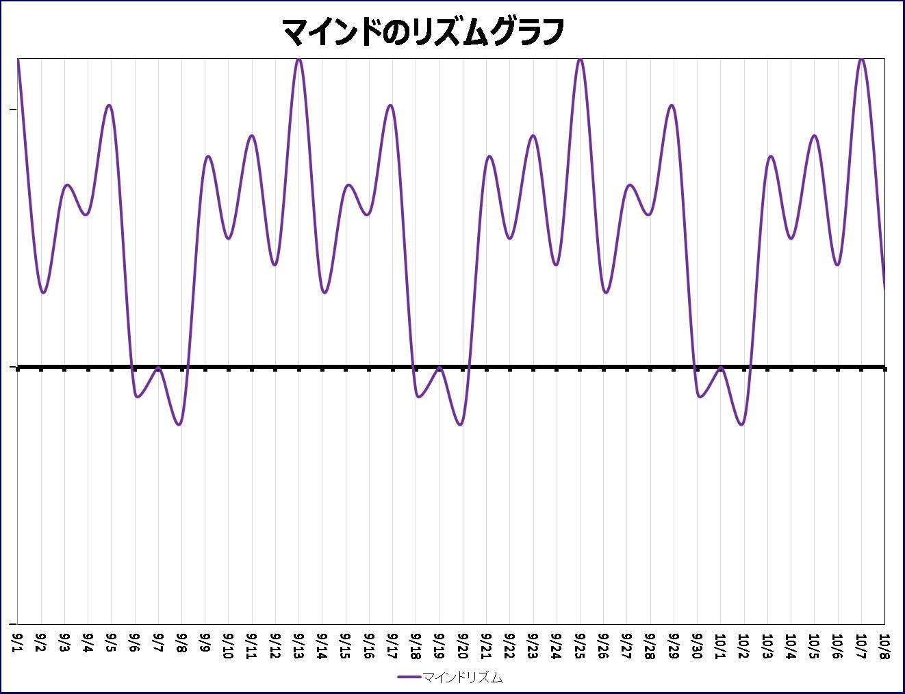

| 【お試し版】神さまからのメッセージ: 愛の気づきをくれたサークル | |
| 鳳華 | |
| (2018) | |
神さまからのメッセージ
愛の気づきをくれたサークル
ある日
空からクルクルと回りながら
降りてくるものがある
何かと思って見上げると
そ の 螺旋 になって降りてきたものは
私の手の中でサークルになった
それは神さまからの贈りものの始まりだった
目次
神さまの声が聞こえる
愛は決してあきらめられない
魂はどこから来て どこに行く？
魂の記憶
魂はどこにあるのか？
神さまからの愛の訓練
自分の中の魂の目覚め
あなたの中にいる誰かって誰？
どんな人になりたいですか？
元に戻るってどういうこと？
自分を愛することができますか？
神さまのメッセージの受け取り方
サークルが教える大いなる勘違い
占うということの本当の意味を知っていますか？
星に個性を例える由縁
気づきのレクチャー
なぜ気づくのか？
バラバラと降ってきた数字
神さまがくれた４Ｄグラフ
鳳華の奇跡メソッド
★最後まで読み終わった方には神さまからのプレゼントがあります
プロローグ 神さまの声が聞こえたら
あなたに神さまの声が聞こえたら
どんなことを思うでしょう？
有頂天になるでしょうか？
人一倍幸せになるでしょうか？
私は特別だって思うでしょうか？
もしもあなたがそんな風に思っているとしたら
神さまの声は届かないかもしれません
私は恐くなりました
幻聴でおかしくなってしまったのかと自分を疑いました
神さまの声が聞こえたとき、私は離婚をして何もかもが手につかない頃でした
やっとそのどん底の中をはい出して大手企業に就職が決まった時でしたから
こんなことを話したら、心の病と思われる
そう思った私は神さまの声を封印しました
会社にいた１５年間ずっとです
つらくて悲しくても愛おしくて
あなたを手放すことができない
私に声をかけてくれた神さまは、ずっと私のそばにいてくれました
私は去っていったのに......
私が神さまから離れていたとき
現実社会の中で私は神さまの思いを知りました
神さまの切なさは、私の中になんども再現されているのです
切ない思いがある人は神さまに愛されています
あなたもかけがえのないそのひとりなのです
神さまは切ない思いをサークルに閉じ込めて、
私の手の中に降ろしてくれました
それは平面のサークルではなく
いくつものサークルが螺旋になって、つながっています
これは神さまの愛のメッセージを受け取るサークルです
ある日、あなたにも神さまの声が聞こえるかもしれません
その時に、あなたは私のように神さまから去っていかないでください
そのために あなたに伝えたいのです
私が神さまに出会った日は、こんな感じで始まりました
第１章 神様から教えてもらったこと
私に語りかけた神さまは、
この言葉を伝えなさい
それは本当のことです
そう私に語りかけました。この言葉を神さまがくれたのは、私が３３歳のことです。私は、これまでずっとその意味がわかりませんでした。
何が本当のことなのか？
何を私が伝えられるのか？
あれから３０年も経ってしまいましたが、私は、神様が伝えて欲しいと思っていることが分かったような気がしています。私には時が満ちたのです。あの時に聞こえた声が何を語ったのか？ 今の私には、神さまの声が私の魂の中で聞こえています
人には、時間が必要です。私は、３０年もかかってしまいましたが、私のように神さまから語りかけられている人は、たくさんいるのですよ。しかし、皆、今までの私のように、なんだか分からずにポカンとしています。これが神さまからのメッセージだと気づいていなのです。あなたには、気づく時間を短縮できるように、私が神さまから教えてもらったたくさんのことをお伝えします。あなたにも時は満ちています。あなたにくれた神さまからのメッセージを知ってください。
今、地球は時間が早
速
周りをしています。神様が少しじれったくなっているのかもしれません。そうですよね、宇宙ができてから１３８億年、いまだに誰も神様の姿を確認していないからです。確認できないものからのメッセージをどうやって自分の気づきとして捉えるのでしょうか？ 神さまからのメッセージはワクワクとした感覚とともにやってきます。この感覚はあなたにとっては確かな手応えがありますが、まわりの人には説明がつかないことばかりだったでしょう？ 体中で感じていることを表現できない、そんな宙ぶらりんな状態が、あなたに起こっているのです。
★神さまの声が聞こえる
カシャンカシャンカシャン
鐘の音が遠くで聞こえている
カシャンカシャンカラカラカシャーン
その音がざわめきとともに近づいてくる
カシャンカシャンドーンドーン
祭りのような、にぎわいがどんどん近づいてくる
にぎやかな鐘と太鼓の音が耳元で鳴り響いている
何？ 何が聞こえているの？
私は耳を疑った、夜にはなっていたけど、まだ私はベッドの中ではない。これは夢ではない、眠っているわけではないのに、何が起きているの？ テーブルの横に座った形で、私の体は固まってしまっていた
カシャーンカシャーンと鳴り響く音が近づくにつれて、鐘の音になかに、男の人の声が聞こえて来るのだ。鐘の音が、どんどん近づいて来ると、その男の人の声も大きくなって、私の耳元に話しかけている
私は何がなんだかわからないのだけど、その声が何かを伝えようとしているのだということは分かった
心の奥底に響くような厳かな厳粛な声で私に話しかけている。私は一生懸命聞こうとした。しかし、私にはその意味がわからない。なぜなら、その言葉が韓国語だったからだ
ようやく、話の最後だけ、書き留めることができた。
チョムチョマルゲッソヨ
３０年経った今でも、その言葉は鮮明に覚えている。韓国語だったその言葉の意味が、今、私には、分かるような気がしている。その意味は、３０年経った私にこう伝えている
この言葉を伝えなさい
お前にはこれからいろいろな感情を通過させるだろう
お前は、怒ったり、喜んだり、笑ったり、泣いたりするだろう、
しかし、その感情は、お前だけのものではない
あの日、お前が感じたように、お前の哀しみはお前だけのものではない
幼子を亡くしたお前の母が、シベリアで捕虜となったお前の父が、
憤り、哀しんで来た感情の歴史が、お前の中で再現されたのだ
それだけではない、お前の流した涙には韓国の地が通った哀しみがあり、
南北に引き裂かれた家族のきずながある
その向こうの中国での哀しみは、満州国を奪われる日本人の悲しみだった
国を奪われ、家族を引き裂かれ、帰るところのない民族の孤独と哀しみ
お前の通った哀しみは、こうした民族のものなのだ、
韓国が、中国が、その向こうにあるイスラエルの民が通った感情を
お前の魂は思い出したのだ
お前にこれから起こることも、
お前だけのものではないということを伝えておこう
お前は、神の前にいる悠久の時間の中、神が通った感情を
お前も通るだろう
何があっても、投げ出せない
止めてしまいたいのに、諦められない
裏切っていくのに、裁けない
嘘やごまかし、怨 みや妬 みの感情に
右往左往する者たちを見ることになるだろう
それでも、許して、それでも愛さざるを得ない、
その思いは、お前のものだけではない
私が、長いあいだずっと抱えてきているものなのだよ
お前が通った感情を、お前が書き留める時が来るだろう
その時は伝えて欲しい
人に与えた喜怒哀楽の感情は、誰ひとりとして
自分だけのものではないことを
私の愛する者たちよ、
感情を解き放して自由になりなさい
神の元に帰りなさい
もうすぐそのときが訪れる
それは本当のことです
★ 愛は決してあきらめられない
私の神さまとの出会いは、その時の私には衝撃的で、その声が神さまなのか？ 悪魔なのか？ 私の病なのか？ 気が変になっていくのか？ 何がなんだかわからず、魂の扉を閉じてしまいました。
それでも神さまはあきらめていなかったのです。これが親の愛です。愛するということの原点です。
ここでは、あえて「神さま」と書かせてもらいますが、それは宇宙の元、愛の根源、サムシンググレート、空、ゼロ、自然、呼び名はなんでも良いのです、私に語りかけている神さまの声は、きっとあなたも聞いたことがあるでしょう！ そのことに気づいて欲しいのです。
神さまの言葉は、愛そのものです。神さまにつながれば、この世の中のいらないイザコザはなくなります。何が必要で、何がいらないものなのか？ 私たち一人ひとりが、しっかりと選んでいくのが必要なのです。神さまの愛は、いつもあなたに降り注がれています
悩みがある人ほど 愛されている
悩みは気づきのためにあるのだから
あなたは、直接神さまの声を聞くことができるようになっています。もうすでに聞こえている方もたくさんいらっしゃいます。しかし、それを確かめるすべがないので、そのまま見過ごしてしまうのです。
あなたが、神さまの声を聞いて、自分の未来を創っていくことができるように、
その方法を伝えよ
そう私に告げた神さまがくれたものは、クルクル回りながら空から降ってきました、それが私の使うライフサークルです
それからの１５年の間に神さまは、サークルとグラフと、数字もくれました。それを使いながら、私は神さまの声を伝えてきました
神さまは、自分の存在を形にして見せてくれています。神さまは、たくさんの方程式を解き明かしてくれたのです。
分け与えなさい！
そう告げている神さまは、私に与えたものを、解いて広めるのだと伝えています。神さまが私にくれたものは、神さまの声を気づかせてくれるものだったのです。
これから、あなたにこのライフサークルをお伝えします。求めれば、神さまはその中からメッセージを送ってくれます。
しかし、お伝えする前に、あなたには準備が必要です。なぜなら、この内容は、常識では考えられない方程式を使っているからです。ここにご紹介するのは、今まであなたが見たことがないものです。
なるべく分かりやすくお伝えしようと思いますが、あなたの心は混乱してしまうかもしれません、そのときは、止まらずに先に進みながら感じ取ってみてください。その混乱はどこから来るのかというと、心と魂の感じ方が違うことから始まっています。
私は、魂と心を違ったものとして表現していきますが、その違いは理解しにくいかもしれませんね。読み進むにつれてだんだんわかってくると思いますが、
魂は生まれる前から持っているもの。心は生まれてから持っているもの。
このように考えておいてください。
あなたの心は、時として魂とは反対の気づきを与えることがあります、この反対の気づきに出会ったとき、あなたはどちらを選ぶのか？ その答えが、あなたのこれからの人生を大きく左右します。私は、あなたに魂の気づきを伝えるために、神さまからの言葉を受け取ってきました。
鳳華は、魂の気づきを伝えるライフナビゲーターです
この本を読み終わる頃には、あなたは、神さまからのメッセージを聞き取ることができるようになるでしょう。しかし、その前に、まず、あなたがこの地球に生まれた意味を知らなければなりません。
第２章 地球に生まれた意味
地球は素晴らしい星です、地球にもう一度生まれたいと願う魂が、何億いいえ、数え切れないくらいたくさん存在しています。あなたは、宇宙にある星の数を数えたことがありますか？ 海辺の砂の数を数えたことがありますか？ どちらも途方もない数だということが分かるでしょう。しかし、あなたが想像する魂は、その星がその砂が数えられたとしても、それは手のひらの上に乗ってしまうほどの数にしかなりません。もっともっと数え切れない多くの魂が、この地球に生まれることを心待ちにしているのです。
そんな魂が"あなた"です。あなたは途方もない数の中から、選ばれて地球に生まれた、貴重な命なのです。
★魂はどこから来てどこに行く？
私たちは、もともと体のない光の存在でした。自由でした、そんな自由な存在がどうして、このように規制を強いられる地球に宿り、飛ぶこともできない体に宿ってしまったのでしょうか？
そこには、私たちが地球に生まれた、意味が隠れています。宇宙にある光の輪は、時間もなく空気もない真空の中にいるようです。そこにあるのは、地球生命の言葉で表現すれば「空（くう）」といいます。空とは、想いの世界です。空には、想いというエネルギーだけが存在しています。想いといっても、地球のように、自分にとって不必要な想いはやってきません。自分の愛の波動だけが、想いの振動をキャッチしているのです。
【― ドラえもんのヒゲ 宇宙からのエネルギーは左回 り ― １０歳画】
空に帰った魂は、時間もなく、なんの束縛もなく、想いのままに存在しています。想いのまま...... ここが大事なのです。
地球上で残した想いがそのまま魂に刻まれています。幸せな想いを持って空に帰った魂は、その幸せのまま存在しています。苦しい想いを持って空に帰った魂は、その苦しさを持ったまま存在しています。
魂は、幸せであっても苦しいままであっても、空ではそれを裁く者はいません、自分もそれを裁くことはありません。その想いだけがそこにあるのです。
幸せなことでも苦しいことでも、あなたの魂の波長は、他の魂が持っている同じ波長を引き寄せます。宇宙では、たくさんたくさん想いを膨らませて、大きく大きく膨らんで、想いの同じ波長の魂が引き寄せ合って大きな魂になります。そうして想いのアドバルーンがパンパンに大きく膨らんだ時、その魂は想いを遂げるために地球に戻ってきます。
あなたが持っている魂は、想いが膨らんだアドバルーンなのですよ
あなたの想いを思い出して下さい！
今世のあなたは想いが強くなった魂です、引き寄せる力も強くなっています。想い出せると、あなたはその力を実感できるようになるでしょう。
あなたが、自分のソウルメイトと出会うのは、あなたの魂にある"想いの波長"が発動した時に起こるのです
生まれるということは、宇宙があなたに送った素晴らしい人生です。あなたの想いを思い出してください。このことは、あなたが今回の地球上で成し遂げる宿題を思い出させてくれます。その宿題のことを"天職"と言います
あなたが、一番やりたいこと！
それが天職です！
それを思い出すのも
そう遠くはないでしょう。
今の地球は、すごく早く次元上昇をしています。地球は次の段階を用意しているからです。
巡り合う
自分の想いを思い出しソウルメイトに出会い、天職に巡り会えたあなたは、光り輝く存在になります
★魂の記憶
生まれた時を覚えている人は、思い出すでしょう。自分が何者なのか？
私たちは、生まれる前にも存在しています。もちろん体はありません、魂と呼んでいる存在といってもよいでしょう。人間の目では見ることはできませんが、時々、デジタルなカメラとかビデオには映ることがあります。私も、よく神社などでビデオを回していると、丸い光がやってきます、クルクルまわりながら、木々の周りを回っています、丸いものがほとんどですが、四角いものや、ひし形になっているものもあります。その光は、まるで生きているように、私の感動と同じように動き回っています、でも少しシャイなようですよ、人がたくさん寄ってきたり、たくさんの声が聞こえると、姿を消してしまいます。
それは木の精なのかもしれません、魂の気なのかもしれません、何かのエネルギーが形になって現れるのです。人が喜んでいる時には、すごくたくさんの光の輪が現れます。私たちが、行うイベントやセミナーの会場では、必ずたくさんの光の輪が写っています
私たちは毎年ゼロツアーと言って、魂の奇跡体験をするための海外旅行をしますが、タイで行われた「コムロイ」と言う仏教の神事に参加したときのことです。コムロイとは、空に気球を飛ばす行事のことで１１月の満月の日に行われるのですが、この会場に４０００人以上の人が集まり、１メートルの円筒形の気球にひとつずつ火を入れて、空高く飛ばします。そのときはすごかったですね、空一面に、光の輪が光っていました。写真にもビデオにも写っています。そこに４０００人が火を入れたそれぞれの思いの気球が空に上がって行きます、空に光の輪と気球の光が天の川のように光の川を作って流れていきます。そのさまは、まるで 魂が空に帰っていくようでした。感動しました。
【― タイのコムロイ 光の輪と気球の写 真 ― 】
感動する場所には、必ずと言って良いほど、この光は現れてくれます。あなたが嬉しい時、その瞬間をカメラで移してみてください、きっとその中には、光の輪が写っていると思いますよ。そうそう、カラオケをやっている時にも現れていました、この体験はそんなに不思議なことではありません、きっとあなたにも見えると思います。この光の輪のことをオーブと呼んでいる人もいます。私たちの周りには、現実には見えないものが、たくさんあります、そのことに少しだけ興味を持って頂ければ、光の存在があなたに近寄ってきてくれるでしょう。
光の輪は、あなたの魂の仲間たちです、あなたを見守っている光です。あなたがこの存在を感じなくなってしまったのは、いつからなのでしょう？ あなたが生まれる前、あなたもこの光の輪でした。人は、肉体から離れると、このような軽い存在になって、どこにでも飛んでいくことができます。
私の２歳の孫は、死んでいく人の形を、彼の魂の目に写していました。お葬式の時でした、おじいちゃんが青い洋服を来て空に飛んでいった。そう、言ったのを私は覚えています。見えているんですよ、魂になったおじいちゃんの姿が。確実に見えているのです。２歳の彼にとって悲しくない別れです、だっておじいちゃんはいつも空にいるのですから。大人になった私たちには、体があり、心があるので、随分と不自由な思いに縛られています。体がなくなってしまったのだから永遠に会えないと思いこんでしまうのです、それで悲しくなるのかもしれませんね、魂の目で見ることができれば、いつでもおじいちゃんは見えているのです。その時、私は２歳の子に教えられました。
★魂はどこにあるのか？
空の中では、魂が存在しています。それでは、私たちの体の中では、どこに魂があるのでしょう？
その答えは、「細胞」です。
人間には６０兆個の細胞があり、その細胞の中には一つ一つに核があります。そこに二重螺旋のＤＮＡがあり、その中に４６の遺伝子が存在しています。１ミリにも満たない１つの細胞の中に長さ１メートルもあるＤＮＡ螺旋が丸まって入っているなんて途方もなく神秘的な世界です。この二重螺旋になっているＤＮＡの中の遺伝子が、魂の記憶を持っているのです。遺伝子はその３０％が自分の親からもらったルーツからの遺伝分子だと言われています。私たちの体は、どこか親に似ている体つきをしていたり、考え方が似ていたりするのは、親の遺伝子を受け継いでいるのです。しかし、私たちが受け継いでいるのは、ルーツからだけではありません。残りの７０％には誰の遺伝子が入っているのでしょうか？ それは、あなたが空で思いを交わした「誰か」の遺伝子です。
あなたが、何回か地球に生まれるとき、あなたの魂はこんどこそ、使命という宿題をやり遂げるために、想いの波動を飛ばします。そうすると、あなたの波動に合う周波数を持っている魂があなたに共鳴してやってくるのです。
空にいるときに、あなたは魂の融合をしているということになります。その融合のときに使われるのが、愛の周波数です。これが地球生活では想いのエネルギーということですね。
地球で成長した愛の周波数＝想いのエネルギーが、魂の融合に必要なのです。エネルギーを合体させるのは、時間もない空間もない"空"でしかできないのです。
遺伝子の残り７０％は、あなたの想いによって引き寄せられた魂がいくつも存在しているのです。デジャブって経験したことがあるでしょう？ 実際には行ったこともないのに、ここに来たことがあるような思いになったり、同じような経験をしたことがあるような気になること、これは、あなたの融合された魂の記憶がそうさせているのです。
第３章 自分って何者なのだろう？
あなたは、自分がなぜここにいるのだろうと思ったことがありますか？ それは、素朴な疑問なのですが、誰も答えてはくれませんでしたね。
自分は何者なのだろう？ と思ったこともありませんか？ それは、生まれることを選んだあなたが、答えを思い出そうとしているからです。
こう書いている私は、もうあなた方よりずいぶん前に生まれました。小さい頃の記憶は、かすかにありますが、あまり思い出すことができません。
自分の中で、生まれてから、何回も魂が生まれ変わる体験をしてきました。その度に自分の環境が変わり、その度に自分の性格までもが変わっていった気がします。私が、今こうしてこのようなことを書いているのは、今のあなたが、「自分なのに自分を理解しがたい」そんな感情を抱いた時に、あなたと同じような思いを抱いた私が、居心地のよい自分を求めて、違う自分を作っていったその意味をあなたに伝えてあげたいからです。
今、自分がわからないという人はたくさんいます。しかし、あなたは、気が触れているわけでも、二重人格者でもありません。自分の魂の記憶と、自分の心が選んだこの世の生き方が 矛盾しているのに気がついただけなのです。
あなたは、人より少しだけ記憶力が良かったのですよ、あなたの生まれる前の記憶が、あなたの意識に働いているのです。あなたの周りの常識的な人たちは、あなたの言葉を真剣に聞いてはくれないでしょう？ あなたの言うことは、非常識と言われ、妄想だと言われ、自分の考えが間違っていると思い込んで行きます。そして、この世を欲の塊で生きるマネーゲームに支配されるようになってしまいました。それでも、魂の記憶が残っているあなたは、今の環境から抜け出したくてもがいています。
「誰に言っても分からなかった、自分の人生は間違っているのだろうか？ 」
これがあなたの中の魂と心がぶつかった時の声です。
あなたはゲームをしますか？ ゲームの中の人生にワクワクしますか？ 私自身は、ゲームに興じることはないのですが、なぜあなたがゲームに夢中になるのか分かるような気がします。どうしてかというと、自分の手の中で繰り広げられるゲームは、自分の手で作り替えていけますから、その快感は相当に面白いでしょう。ゲームの中では悪と善がはっきり分かれていますからね、自分が選ぶもので勝利への道が示されていくので、自分で選んで勝利した実感があります。
実はその面白さは、現実世界のマネーゲームと同じなのですよ。違うのは悪と善が簡単に見抜けないことです。私も、以前はこの世のマネーゲームに参加していました、それも斜めから眺めているのではなくて、真正面からゲームを取り組み、欲の塊として勝利をつかんできました。マネーゲームの面白さと、その反対 の 虚 しさも両方体でおぼえています。
ゲームをやり遂げることの快感から抜け出せなくなるのもわかります。しかし、人の作ったゲームはいつか自分の手で終了にしなければなりません。自分がはまっているゲームも、社会のマネーゲームも誰かのシナリオがあって、そこに向かっているだけのことです。相手のシナリオに乗せられたままで良いのですか？どこがゲームオーバーなのか？あなた自身が終了するのです。
そのゲームを終了したとしてもあなたには、もうひとつ最高に面白いゲームが残っています。それは、あなたが選んだ人生それこそが最高のゲームです。自分をヒーローにするのか？それを選ぶのも自分の選択です。そろそろ気が付いてください、人生ゲームは、マネーゲームではありません、自分のゲームのシナリオはあなたの魂が持っているのです、あなたの魂の声を聞いてください。
★神さまからの愛の訓練
神さまは、今世においての私の魂に何でもかんでも体験させたかったようです。だから、
愛される喜びを知る「幼少の頃の自分」、
考える楽しみを知る「学生の頃の自分」、
愛と悲哀を知る「結婚した頃の自分」、
何度も何度も繰り返し怒っていた
「営業管理職の頃の自分」、
そして今、愛を伝えたいと切に思う
「ナビゲーターの自分」、
その時々に、みんな違う魂の自分がいます。神さまは、私の魂に喜怒哀楽を経験させてくれました。
親から良い人になりなさいと言われて育っている人もいるかもしれませんが、心を教育する社会では、相手のことを思いやり、決して怒らず穏やかであることを良い人というのかもしれませんが、魂の良い人とは、穏やかで怒らない人と言う訳ではありません。泣いても良し、怒っても良しなのです。喜怒哀楽、この複雑な感情をかみ締めた経験がない人には、人の思いを想像することはできません。
喜怒哀楽は神さまが用意してくれた愛の波動のための訓練なのです
人は、生まれ変わったら○○をしたい......と言いますが、生まれ変わってからやりたいことは、今から仕込んでおかなければ実現することは決してありません。空では、違う自分に成り変わることはできません、今のあなたの魂が、空に帰ってから、愛の周波数が共鳴する人たちとつなぎあうことができるのです。今を生きていることがいかに大事かということが分かっていただけますか？
今、私の話を聞いてくださっている方の中でも、不思議な体験をお持ちの方はたくさんいらっしゃると思います。しかし、それを言うと親に怒られたり、仲間はずれになったりして、そのことをむしろ隠すようになっていきましたね......
魂は、見えないものだから証明することは難しいです。しかし、その魂に触れたものは、一生涯その感触を忘れません。忘れられないものを隠し通すのは苦しいことです。
隠してきたあなたの魂を解放する時がやってきました。魂でつながる時が来ましたので、言っても大丈夫、話しても大丈夫です
★自分の中の魂の目覚め
私は、ある時期、聖書にはまったことがあります。だからといって私はクリスチャンになりたいわけではなかったのです。聖書の中の人間模様が面白くて、何度も何度も読み返し、そこに出てくる人物たちに感情移入をしていました。
聖書には数々の奇跡を起こす男たちがその都度主人公として登場しますが、聖書の本当の面白さは、神の子キリストをこの世に生み出すために、女性たちが命をかけて神の血統を守り継いできたことを書いているくだりです。クリスチャンの方がいたら怒られてしまうかもしれませんが、キリストを生むための家系を絶やさないために、夫でない男の元に夜這いをして子を身ごもった話など、女の不貞がたくさん書かれています。その頃は不貞というのは重罪でしたから、死をも覚悟して、女性たちは不貞を働いたのです。女が使命を全うする力というのは、何ともすごい決意なのかと、聖書の中で女の真の強さに感心していました。
そんな聖書ですが、映画になっている場面もたくさんあります、私もたくさん見ました、その中で、私が、一番気になる人物は「モーセ」なんですね。「十戒」という映画をご覧になった方もいらっしゃると思いますが、エジプトの王子として育てられたモーセが、実はイスラエル人の奴隷の子だという自分の出生の秘密を知り、奴隷となっている神の民をエジプトから救い出すという壮大なドラマです。モーセは数々の奇跡を起こしながら、神の民をカナンの地に導いていくのですが、その時に海が大きく二つに割れ、神の民は救われ、エジプトの追手は海に飲み込まれてしまいます。この海が割れるシーンを私は何度も夢に見ます、そして、民を率い て 杖 を振りかざしている時、私の手の中の杖が感触とし て 蘇 ってきます。
始めの頃は、私はこの映画のシーンが好きなのだとしか思わなかったのですが、あまりに鮮明に、何度も何度もこのシーンを自分の心の中で感じるので、ここに何かがあると思い出しました。これが、神さまからのメッセージだと気づくのはもっと後のことなのですけどね......
このような臨場感のある体験をしている方は多いと思います。この感覚を見逃さないでください。これが、あなたの遺伝子の中にいる"誰か"なのです。
私は、空でモーセと愛の周波数を交換して共鳴したのでしょう。今、私が気づいてからはモーセが私を随分助けてくれています。
世の中には、神の声を聞く能力を持つ人がいます。超能力者と呼ばれたりしますが、人は皆この能力を持っているのです。あなたも、空の中で誰かと共鳴していれば、その人の周波数をあなたの魂に持っています。気が付けばあなたにその誰かが応援してくれるようになります。あなたは、そこに気がつかないだけなのです。
★あなたの中にいる誰かって誰？
気になりますよね、その確認方法があるのでお伝えしましょう！
思い出してみてください、あなたは何に興味を持って何に夢中になりますか？ 昔の人や偉人たちでないかもしれません、映画に出てくる主人公に憧れ、何度も何度も繰り返し、その場面を見ては感動している人、それは、その感覚があなたの空の中で取り入れた愛の周波数＝想いのエネルギーなのです。
物語だから妄想だからとスルーしないで欲しいですね、あなたがワクワクして感じていることに、そこに魂の宿題の鍵が残されているのです。
ある女の子は、大好きな映画がありました、何度も何度もそれを見ました。どこが好きかというと、みんなからチヤホヤされている主人公の女性ではなく、目立たなかったけど自分らしく生きていた女性が、最後にはすごい仕事を成し遂げるキャリアウーマンになるというところです。その映画を見ると自分の気持ちが高揚するので何度も何度も見ていたそうです。
こんなに大事なメッセージをあなたは見落としています
この彼女、仕事に行き詰った時に私のライフナビゲートを受けましたが、思い出したんですよ。この目立たないけど自分らしく生きてキャリアウーマンで成功した女性は自分だって！ いま彼女は、自分らしくない人生を変えようとしています。気が付けば神さまが応援してくれます、魂が喜んでいれば、彼女の成功も近いでしょう！
しかし、多くの人の中にいる誰かは夢を追いかけている前向きな人ばかりではないかもしれません。人を憎んだり、脅かしたり、騙したりしているとスッキリするという人間も中にはいるのです。そのような魂は、同じ波動を持った魂を引き寄せます。悪い人には悪い人が集まってくるのと原理は同じです。７０％の遺伝子の中に、悪魔の周波数を入れ込んでしまった人は、その人の環境によって、その遺伝子を引き出してしまうことがあるのです。
これが、この世にはびこってしまっている愛の周波数とは違う存在、悪魔の周波数です。これも人間の想いのエネルギーから生み出される周波数ですから、怨みや憎しみを強く感じたまま空にあがった魂は、その周波数によって同じ思いの魂を引き寄せてしまうのです。今の世の中で、なぜあんなに極悪非道の残忍な行動ができるのか、という事件も起こりますが、それは、魂の周波数が思いを膨らませて巨大化した悪魔になっているからです。巨大化するのは空の中の魂が融合してできた約束事です、きれいな魂の巨大化は想像してもうれしいですが、悪の巨大化は恐ろしいですね。でもそれをすることがその魂の宿題なのですから、やるしかないのでしょう、どうもやりきれないですね。
しかし、それを改善することができないわけではありません、地球に生まれた特権は、次元を変えるチャンスをもらえることです。次元を変えるとは、魂の飛び級のようなものです。極悪人が人生を１８０度転換して、神に使える牧師になったという話がありますが、このようなことは、次元を変えると起きてくるのです。
魂は同じ状況が起こると発動してしまいますので、憎しみや恨みの発動が起こらないようにするには、現世において同じ状況を作らないことなのです。私たちができることは、地球上で、心配の波動や、恨みの波動ばかりを、流し続けるのをやめることですね。楽しいことや、面白いこと、そんな波動を流し続ければ、魂は悪魔の波動を作用させません。この世の中を、ワクワクとした喜びの世界にしていけば良いのです。そこに私は使命感を感じます。
【― 未来の人間（宇宙人 ） ― ７歳画】
第４章 神さまからのメッセージ
自分を思い出しなさい
自分の居場所を思い出して、魂と連動した人生を歩みなさい
自分に帰りなさい
宇宙の元に帰りなさい
最近はこの言葉がより強くなってきました。昨今のマスコミ報道を見ていると、パワハラや、訴訟など、自分はさておいて誰が悪いだの、何が悪いだの、そんなニュースばかりが映し出されています。自分を見失って欲に走ってしまった無残な姿ばかりが目に付きます。そうやって映像に流されている人たちを見ているだけで、見る側の私たちのエネルギーも低いエネルギーに取り巻かれてしまっています。
自分の元に戻りなさい
このようなメッセージが頻繁に伝えられてくるのは、２０１１年の東日本大震災の後からです。 気づいている人はもう目覚めています、生き方が変わった人、職業を変えた人、何かに押し出されるように、自分が動き出している人、たくさんいらっしゃいます。
それは、最終段階の審判がやってきているからなのです。変わらなければ、今そう思っている人はたくさんいます、しかし、自分の生活を否定することまではできません。何もかもがなくなってしまうという恐怖に襲われるからです。そういう方々に、神さまからメッセージをお伝えします。
あなたの魂に合う生き方をしなさい
そこには、無理もなければ、背伸びもいらない
今のあなたの生活を無理やり壊すことは必要ないのです。必要があれば、現実は緩やかに変化をしてくれます。あなたがやらなければならないのは、自分に戻ることです。自分らしく生きること、それを捜しなさい、そうすれば、あなたの居場所は自ずと見つかります。
人は自分の魂が選んだ使命があります、変わりたいと思い続けている人は変わる必要があるのです。そう思うあなたはあきらめないでください、あなたは何度も生まれ変わりながら、自分の使命を探し出しているのです。ここで放棄したら、次元上昇のチャンスはもうありません。今を変えたいと必死で思っている人は、地球自体に生まれ変われるのが、最後のチャンスなのかもしれません。
多くの者たちが、知るようになるだろう
そして同時に、多くの者たちが、
魂の気づきを阻止するように働きかけるだろう
宇宙はいつの時もバランスをもって進めていきます。だから、あなたが今、窮地に追い込まれているとしたら、あなたの魂は、大いなる気づきの前に来ています
窮地が起こらなければ、あなたは気づけなかったのです。扉を開けてください。その扉の奥には、もっとあなたが活躍できる場所が用意されているのです
今気づいている人は、魂の叫びを発する時が来ています。そのために、あなたは無性に声に出したくなっているのです。
気が付いている人は、自分にも力があることを知ってください。この本は、私が特別だから書けているのではないのです。私の魂が経験した人生は、さまざまな魂を経験して来た私の体は、今、知らないまま右往左往しなければならないあなたに、語りかけているのです
あなたが、勇気をもってあなたの魂の声を発することができるように私は、この本で魂の輝きを伝えられたらと思っています。
【― ＵＦＯは二つ重なってい る ― ６歳画】
★どんな人になりたいですか？
あなたはもう決めていますか？ 迷っていますか？ この世の中のマネーゲームにのめり込む。この世の中のマネーゲームを終わりにする。あなたが、体験する多くのことは、生きているうちにしかできないことばかりです。今までがどんなゲームであったとしても、あなたには選択をして創るという未来が用意されています。自分の思うがままの人生に意味があるのです。自分を責めないで、相手と比べることでもありません。あなたにしかできない人生があるのです
昔の私は、今の私からは思い出せないくらい、自分の意思では生きられない子でした。病気だったから、そうかもしれません。親が過保護だったから、そうかもしれません。小学校の高学年になるまで、じぶんで洋服を着られない私、靴下も履かせてもらっていた私、そのくらい、小さな私は 何もできない子供だったのです。
２歳の時に、小 児 麻痺 という、不治の病（その当時はその薬も開発されていなかったので）にかかりましたが、母の不眠不休の看病で、奇跡的に五体満足なまま、今も生きています。
それがやっと治ったかと思ったら、すぐに小児リウマチという病に侵されてしまいます。子供ながらに、骨の節々が痛く、寝たままの生活が続いていました。そのために、私は、幼稚園も小学校も 卒業アルバムでは左上の四角の中に別枠写真で載せられています。
幼少期の思い出は、病院というのが私の記憶です。
それでも、思い出すのは苦しいことや寂しいことではありません。お母さんが看護疲れで私の付き添いが出来なくなったとき、一人になった病室には、病院中のおじいちゃんやおばあちゃんが、たくさんのお菓子を持ってきてくれました。だから、病院内で私の体は３倍ぐらいに膨れ上がるほどまん丸に太っていました。
小児リウマチの時も、苦しい思い出よりも、楽しい思い出がいっぱいあります。毎日のように病院通いでしたから、看護師さんにかわいがられ、お姉さんたちの部屋に遊びに行ける特権を持っていたので元気な友達から、やたらにうらやましがられました。
病気の子を持っている親御さんにお伝えしたいのは、子どもがかわいそうだとは思わないでください。子供はその環境の中で、いくらでも楽しむことができる能力を持っています。お母さんが悲しい顔をすると、そのことで悲しくなってしまいます。
今思うと、子供の病気というのは、親御さんの心の試練のために起こっているのだと思います。私が通った、幼少期の不自由な生活は、ひとり遊びから発想する想像力と、誰にでもかわいがられるという特技を身につけてくれました。
その代わり親は、大変だったと思います。今思い出すと、私の魂が壊れないように、両親とも死ぬまで私を守ってくれていました。
今があるのは、そのような温かな周りの人の愛です
「三つ子の魂百まで」とい う 諺 がありますね、本当に私は、病院で過ごした幼少期で、いつでも楽しく、どんな環境でも笑って、みんなに愛される心を備えられたのだと思っています。
★元に戻るってどういうこと？
神様は伝えています。
私はあなたの中の愛だから、そこに戻りなさい
神さまが伝えているのは、あなたの中の魂に気づきなさいということなのです。
あなたが、自分の元を知って初めて、あなたは元に帰れるのです。
現世は終末を迎えています。そのために、この世には救世主があらわれるキリストだったり、仏教上の救世主"弥勒菩薩"であったり、宗教の教祖として崇め立てられる人は、神に戻る道を示しています。しかし、それを曲解して、自分が神なのだから自分に寄り添うように行ったのが、新興宗教の恐ろしいマインドコントロールなのです。
私の営業管理職時代にも、宗教団体に連れて行かれた若者がいました。とても、気立ての良い、明るい子達で、お酒を飲んでよく笑う楽しい仲間でした。自分たちの未来を語り、仕事にも意欲的で、営業自体を楽しんでいました。そんな希望を持っていた若者の、どこの隙間を突いて、その子達の心をつかんだのか？ 残念ながら、その頃の私はその正体をつかむことができませんでした。じっくり、巧妙な手口で、忍び寄ってとぐろを巻いて，その子達の心に巻きついて洗脳してしまいました。
世のため人のため、家族のため、先祖のために、自分が人柱に立って、道を開くことが清い使命だと教えられたそうです。お酒も飲まなくなり、希望も語らなくなり、笑い声も聞こえなくなり、能面のような表情のない顔になってしまいました。のっぺらぼうのような顔をして笑みを浮かべ、会社を去っていった彼女たちを、私にはどうすることもできず、苦しい思いをしたのが思い出されます。
神さまの元に戻るというのは、そういうことではないのです。勘違いしないでください、勘違いした宗教の誘いは、欲からの発信です。神さまは愛です、あなたの中に神さまはいるのです。優しい誘いには乗らないでください、愛と欲は、時間とともに化けの皮が剥げていきます。
宗教の話をしたので、少しそのことについてお話をしておきましょう。宗教はまがい物でなければ、この世には必要なものだと私は思っています。
しかし、宗教団体は心のよりどころとなるものを宗派の唯一神としているために、他の宗派の神を敬遠する傾向があるのです。
神さまは、全てをこの世に送り出した元です。すべてがあってこそ今の世の中があるのだから、唯一のものだけを信仰しなければ、他は排除するというのは、神の言葉ではないのです。
宗教は、歴史の中で培われてきた大いなるデータの蓄積です。データで人を裁くことは神の声ではありません。データは神の声を気づくためにあるものです。宗教が犯し続けてきた過ちは、データの使い方をわが物に変えてしまったことにあるのです。
聖書は、そのデータの宝庫です。そこの登場人物を解釈するのも一つではなく、本来は人間の気づきとしてたくさんの解釈があって良いのです、聖書は人の気づきを必要としているのです。
神さまはこう伝えています
悪魔は、自分の中の影に波動を寄せてくる修行神です
自分の中で、欲と愛を見抜くことができなければ、いつまでもこの勘違いは続いていくでしょう。それが悪魔という修行神の役割なのです。
僧の修行は、世の中からかけ離れ、火の中を歩き、水行をし、この世の欲から離れて過ごします。一般人の中にいる修行神は、欲の中に生きて、生きながらにして、その欲を見極め、自分の神性にたどり着くのです。
この世に、悪魔という存在はいないのですよ。自分の中の、悪魔と神を明確に知らしめるために、悪魔はその存在を誇張してきたのです。
情報があふれかえり、モノは便利になり、なんでも手に入れることができる世の中になりました、お金さえあればです。お金がすべての価値と等価交換するものと勘違いされています。
お金に変えられないもの、それが愛です。
あなたは自分の愛の深さに気が付く時が来ています
【― ＮＯ星 人 ― ４歳画】
★自分を愛することができますか？
自分を認めることができなければ、自分以外の人を愛することはできません。
私は、数多くのセミナーを行ってきましたが、１４４日で恋人が出現するという「奇跡の恋愛講座」の中で、恋人に出会っていく彼女たちから、「自分を好きになった、好きになれた！」という言葉が返ってきました。この言葉が全ての答えです、恋人を欲しい欲しいと願っているうちは、自分の欲望なのです。欲から発する言動は、お金持ちの彼が良いとか、背は高くて、細身が良いとか、外見のことばかりです。そんな始めの頃の彼女たちは、彼氏は欲しいけど、いつも自分が結婚まで進めないのは、自分が悪いからだ、魅力がないからだと、自分を責めてしまっているのです。
あなたはお分かりでしょう？ 自分を責めてしまっている女性には輝くオーラが無いのです。自分を否定したり、自分を卑下する言葉を簡単に使う女性たちには、それが、あなたの魂を傷つけているのだよと、１４４日中ずっと伝えてきたのです。自分の中の魂に響くのは光の言葉です。言霊というのは、すごい力があるもので、１４４日経つと、自信がなかった女性たちが、自分に自信をつけていくのです。自分が好きになるということは、自分の中の愛に目覚めたとき、言い換えれば、自分の中にいる神さまに出会えたということなのです。
自分を愛するということがどういうことか分かっていただけるでしょうか？ あなたが、自分を愛するようにならなければ、あなたの中にいる神さまは、あなたの望みを叶えてあげることはできないのですよ。
【― ハッピーキッズ 絵 ― 】
第５章 あなたが生まれた時の秘密
なぜ生まれたのだろう？
その答えが今明かされる
あなたは、答えを知らなければならない
神さまが伝えたのは、この世に生まれた理由
人間の生まれる前の正体を知り、
地球においての約束事を思い出すこと
あなたが生まれたとき、羊水の中から地上の空気に触れます、そして、はじめに行うのは、オギャーという息を吐くという行為です。これが人が生まれるということです。
息を吐かなければ、人は始まらないのです。このエネルギーの動きを見てみましょう、吐くという行為はエネルギーを出すということ。空からやってきた魂が初めて空気に触れて自らのエネルギーを出すのです。魂がはじめにやるのが地球にエネルギーを与えるということなのです。息を吐いたらそのあとは吸います。魂ははじめて地球のエネルギーを受け入れるのです。吐いて吸ってを繰り返しながら人は生きていきます。
吐く＝与える
吸う＝受け入れる
このなんでもないように行われている動作こそが、人の使命なのです。
与えよ そして受け入れよ
呼吸をするたびに神さまはあなたのそばにいます。神さまがいつでもそばにいるのがわかりますか？
人は最期の時を迎えるとき、大きく息を吸います。思いっきりこの世の生を受け入れて魂に戻っていきます。息を引き取るというのは、息を吸い込むということで、この世の死を意味します。
人は与えるためにこの世に生まれ、死ぬときにはすべてを引き取って自分の魂に戻ります。
私の母が死んだ日のことです。私は、その日予定した場所に出かけるために身支度をしていました、その時、母が私の名前を３度呼びました、私はその声を耳元ではっきり聞きました。母は何年も通常の意識がない状態で病院に入っていましたが、その日ははっきりと私の名前を呼んだのです。私は、その日の全てをキャンセルして母の病院へと向かいました。母は私が着いてから３０分後に息を引き取りました。私は、母との最期のお別れをすることができたのです。息を吸って死ぬ、それを目の前で見ました。大きく息を吸った時に、母の目から涙がスーっと流れました。それがどのようなメッセージだったのか、今の私には分かるような気がします。その朝、母の声がはっきり聞こえた私、それを疑うこともなく母のもとに駆けつけた私、母が息を引き取るときに私に教えたのは、「あなたは見えないものを見て、聞こえない声を聞くことができるのよ」そんな事を最後に知らせたのです。私は、長いあいだ自分にある、見えないものを見る力、聞こえない声を聞く力を信じることができませんでした。私を育ててくれた母は、最期の時に私が自分を信じることを与えてくれたのです。素晴らしい魂の母でした。
私は普通に生きてきました、スピリチュアルを認めない現実の社会で、その中でも私は勝者になるために、営業の世界で生きてきました。営業で日本一になっても、心は晴れていても、魂は喜びませんでした。勝ち組の愚かさを体中で実感しました、負け組の悲しみも見てきました。そんな競争が魂にはなんの成長にもならないことを、何年もかかって習得してきました。営業時代にもらった６０枚以上の表彰状は全て捨ててしまいました、誰かがなんともったいないと言ったようですが、過去の栄光は私には必要のないものですから。
今になって分かるのは、私の過去は、この世に生きるルールを知ることだったということ。この世の心を軸にして組み立てられている世界と、魂から発している気づきの世界には、ギャップがあります。その違いが今の世の中のストレスになっている。これを体中で体験することが必要だったのです。
多くの方は、心の働きと、魂の働きが違うことを理解していません。この二つは同じような気づきの発信をしますが、それは発信元が違うのです。心は地球からの発信です、魂は宇宙からの発信です。宇宙から来た魂が、地球にやってきた意味は、心と魂がドッキングするためなのです。
私は、魂の発信をしまい込むのをやめました。
今、マネーゲームが収束する時です。終わりに近づくに連れて、魂からの発信ではない嘘のゲームは、今まで以上に巨大なエネルギーを放射してきます。終わる時がくる、それが今を終末と言われる所以です。終わりは来ていますが、終わりの時に一番嘘のエネルギーが高くなります。線香花火も、最後に一番大きな光を放って落ちていきます。太陽も最後に地平線に落ちる瞬間が一番明るい光を放ちます。冬に備えて木々が葉を落とすときもそうです、新芽を出す時よりも、葉を落としていくときのほうが数段エネルギーを使うのです。
嘘が終わる最後の瞬間が来ています。魂とは関係のない大きなエネルギーに巻き込まれないでください。今大きく輝いて見えるものも、嘘のゲームの象徴であればあっという間に消え去っていきます。本物は何なのか？ それを問うのは自分の心、答えを出すのは自分の中の魂です。
魂の本当の悦びを感じたことのない心は、嘘でも輝きを欲しがります、しかし嘘は魂にはなんの影響も与えないので、自分の魂の成長はありません。このままでは永久的に神様には出会うことはないのです。しかし、これを選ぶのもあなた自身です、この地球での選択はあなた自身でしか決めることはできないのです。
私は、神さまの愛を知ってしまいましたから、嘘のマネーゲームには全く未練はありません。だからといって、お金が悪であると思っているわけではありません。物質とともに生きている世界はまだ続くでしょう、その間はお金と価値交換することはなくなりません。その人の魂が使命を全うする時にお金で価値交換する必要があるならば、そのためのお金は無尽蔵に使われるでしょう。しかし、そこに執着することはありません。
神さまの愛を知った人は、執着するものがなくなります。あなたは、これからも何かに執着し続けますか？それとも軽くなって生きていきますか？
自分の中の気づきを信じてください、そして想いがアドバルーンのように膨らんだなら、あなたはその想いを世の中に発信してください。気づいている人は、魂の仲間です。あなたが気付くのは今なのです。
【― 悪と戦う 力 ― ３歳画】
★神さまのメッセージの受け取り方
魂は、宇宙と繋がった時に動き出します。それが本物であるかどうかは、その時の感覚が証明しますワクワク、ドキドキ、フワフワ、ゾクゾク、キラキラ、こんな感じです。
あなたは毎日のようにその世界に戻っています。その世界とは生まれる前の魂です。あなたが悲しくつらい時は、楽しい明るい世界に連れて行ってくれます。あなたが喜びの中で有頂天になっている時は、そこには静かな世界がありクールダウンさせてくれます。それが夢と現実の境界線です
夢は、あなたの魂と心のバランスを取ってくれているのです。現実とは全くかけ離れた光景を見ることもあるでしょう。私はお姫様になって塔の中に閉じ込められていたこともあります。空を飛んでいたり、倒れるビルを体中で支えようとしていたり、人を殺した経験が手の中に残っている時もあります。逆に、殺されたことも何度もあります。現実的には起こりえないようなことでも、あなたの魂は記憶に残っているのです。どんなに悲惨なことを起こしていたとしても、あなたは、夢の中の出来事を裁くことはないでしょう。それが、魂の世界なのですよ。苦しい思いはあっても、悲しい思いはあっても、そのことを裁く人はいないのです
この感覚をおぼえていてください。これが魂の世界です。夢のあなたに戻れば、魂の在り処が掴めます。神さまからのメッセージは、魂がまだ感じられるとき、あなたが夢から覚めるときに感じられるのです。
あなたが、今一生懸命に考えていることがあるなら、夜のうちに結論を出すことをやめましょう。夜の思考は心のクセで動いています、そこの結論は心のクセからの答えです。どんなに考え尽くしても、心の結論は自分の経験の中でしか答えは見つかりません。でも、あなたの魂は、何千年もあらゆる経験を通して培った感性が泉のように沸いているところです。夢は、あなたの元いた場所に戻る時間です。あなたの魂に、結論が見つかるように願ってから眠りに付けば、朝起きた時には、その答えが出ています。
自分の思考の癖を手放すことをしてください。あなたの人生は今までのクセの結果です。今回あなたが生きているのは、時代の流れの中の今で、今だからこその常識です。しかし、あなたの魂は、長いあいだかけて持ち続けた想いがあります。あなたが取るべき答えは、あなたの魂が必ず見つけ出しておいてくれます。神さまのメッセージは朝のひらめきの中にもあるのです。
夢を全く見ないという人、見ているようだけど思い出せないという人もいらっしゃると思います。そういう場合はどうなのかと思うかもしれませんが、覚えているかどうかが問題ではないのです、あなたの心が夢を覚えていなくても、あなたの魂は、潜在意識と言ったほうが分かりやすいかもしれませんが、その夢を覚えています、心の記憶ではないので全く問題はありません。あなたの意識がないときには、あなたは魂の世界に戻っています。そのことを思い出す必要がなければ魂はわざわざ思い出させようとしないだけのことです。思い出すことがなくても魂は知っていますからご心配なく。
つい先日、神さまがくれた朝のひらめきです
これから世代人たちは、魂に近い存在として生きている
絵を書かせてご覧なさい、生まれる前の記憶を描くでしょう、
宇宙のエネルギーを描く子もいるでしょう
あなたの書く本は、魂の記憶を忘れてはならないと、
もがいている人たちに、手を差し伸べることです
私の朝は、このようなメッセージをもらいました。神さまからのメッセージは即断即決です。魂に感じたものは、時間をかけてはいけません。さっそ く NP O の活動「ハッピーキッズ」で子どもたちに宇宙の絵を描いてもらいました。
子どもたちの描く絵は、まさに魂からのメッセージです。
地球の中を描く子は、
ここにも世界があるんだといいます。
ドラえもんのヒゲは
左回りをしながら渦を巻いている。
渦の真ん中に一番大事なものがあるんだよ
宇宙船は二つ重なっているんだよ
未来の人間は耳がないんだ
僕は悪者と戦っているんだ
その場から離れず何枚も書いてくれる子もいます
【― 地球の中にも世界があ る― ５歳画】
魂の声を出せる環境を作りなさい
この本の中で、何枚も入れている絵は、子どもたちに書いてもらったものです。
子どもに付き添ってきた大人たちにも声をかけました、大人になると絵を書く事に抵抗があるようです、なかなか書いてはくれません。大人にも魂で絵を書く習慣ができるようになると良いですね、本当にそう思いました。
★大いなる勘違いに気づくサークル
今時代は、二極化の中で勝ち組と負け組とに分けようとしているけど、魂の記憶を持っている人達は、そんなことを意味がないことをわかっています。本物がわかるからです、感性が宇宙に近いまま残っているのですね。しかし、そのままにしておくと、自分だけ違う人格のように、取り残され人生の隅っこの方に、追いやられてしまうかもしれません。そんな恐怖を感じている若者に接することが多くなってきました。
自分には意味のないことでも、勝ち組になるということを最大の価値観として押し付けてきます。あなたのやり方はねじ伏せられ、時には躁うつの双極性障害とみなされて、医師の診断を受けるように病気のレッテルを貼られてしまうこともあります。
つい最近のことです。あなたの尊い個性を、やり方が違うというだけで病気だと決め付けた社会に、私は憤りを感じます。そして、そのことを受け入れて薬の副作用で本当の病気になっていってしまったあなたにも憤りを感じます。あの時、サークルはあなたに真実を伝えていましたよ、あなたは病気じゃない、あなたが選んでいるものは、全てがマイナスの波動のものばかりなのだということを、ライフサークルは伝えていました。あなたも一緒に共感しましたね、自分は病気なのではない、周りとのエネルギーの違いが自分を押し込めているのだということを、あなたはサークルの中に見出していましたね。
しかし、その数日後にあなたは病院の中にいました、周りがあなたを洗脳する方が強かったのかもしれません、私は、自分の力のなさを悔いました、なぜもっとあなたを引き止められなかったのか？ サークルがあれほどまでにメッセージを送っていたのに、私は手を差し伸べてあげられなくなってしまいました。
このようなあなたをもう作りたくない。
神さま、もっと伝える力を私にください。
神さまの悲しい思いを
これ以上増やすことはしたくないのです。
★大いなる勘違いが、世の中には多くはびこっている
この勘違いは、聖書の創世記の中から始まっています。エデンの園で大事に育てられていた、アダムとイブ。大人になるまで取って食べてはならないと言われていたのに、その約束を破ってりんごを食べてしまいます、人類はそれからイバラの道を歩むことになるという、神話のような例え話です。この時に勘違いしたのは、蛇にそそのかされたイブです。あの赤い実を食べれば、お前も神様のような人になれるとそそのかされるのです。そして、イブは自分が食べるのではなく、アダムがその実を食べるようにそそのかします。だから女性は２度罪を犯しています。指導者の声（蛇＝悪魔）に従ったこと、自分の愛する人（アダム）をそそのかしたこと。
このような罪を、キリスト教では原罪としています。誰でもが、自分の中に罪を持っているのだと。
このように例え話にして、伝えていかなければならないほど、この勘違いは多くの罪を犯してきました。犯しているときには、わからないのです。神も悪魔も同じようにやってきます、どこが違うかというと、
神は愛で試練与え、悪魔は欲で夢を与えているのです。
人間は、常に愛と欲との間で、迷うようになってしまいました。
大いなる勘違いは、人間の宿命としていつでもどこにでも現れます。その大いなる勘違いの正体を暴くことは、自分を客観的立場において見ることです。自分から離れて物事を見るのは、修行の中でも難易度の高いもので、内観や瞑想と言われます。
自分が描いた客観性を相手に伝えるときには、もっと難しくなります、自分と相手との間にその根拠となる手応えが必要になります。伝えるには、相手との間に共通の認識が見えなければなりません。
伝えるというのは大変難しいことです、ここが一番大事なところですが、抜けているのです。世の中は、見えないものへの共通認識の術が見いだせないために、客観性を伝えるための占い技術がマインドコントロールというような、押さえ込み技術に変化してしまったのです。
自分の人生を他の人にコントロールさせてはいけません。自分の尊い人生です、自分で選ぶことをしなくて、誰の人生を生きるのでしょうか？ 神さまがくれたサークルを使えば、客観的に物事を見ることができます。自分で、悪魔の正体が見抜くことができるのです。
★占いの本来の意味を知っていますか？
自分の元を思い出すために、自分を知るために、自分発見のために、生年月日の自己判断占いが流行ってきたのです。しかし、マネーゲームの社会の中で占いは金儲けの手段とされてしまいました。それでは、気づきはやってきません。人の価値観に振り回される依存形の人間を作り出してしまいます。本来の占いは自分探しに使ってこそ気づけるのですよ。
占いとは未来を予測し備えることですね 未来を予測するには客観的なデータの積み重ねが必要です。株価の動向も、ファッションの流行の動向も、過去のデータからの未来予測です。データに信ぴょう性があれば、誰でもが予測できるのが占いというものなのです。その未来予測を、ある一定の人だけに牛耳られているために、あなた方は、その占いに右往左往されなければならないのです。未来予測は、データがあれば誰にでもできます。自分の人生は、自分で決めるべきものです。そのために、データがあるのです。
自分の人生だけならデータを知ることで未来予測はできるようになります。しかし、人の人生を予測する仕事に就きたいのなら、それは、相当の修練が必要です。相手のことも、相当に知ってからでないと、相手の未来を予測することは許されないからです。私の作った 、 NP O 法人日本ライフナビゲーター協会というのは、人生の予測をするために、ライフナビゲーターの修練をしている場です。自分を知り、相手を知り、現場を知ることこそが、他の人に言葉を伝えることができる、ライフナビゲーターの尊い使命なのです。
占う側になった人は、怖さを知っておいてください。人がむやみにあなたを信用するようになります。今まで誰にも頼られなかったのに、占い師になったとたん、あなたは先生と呼ばれるようになります
先生とは、先に生まれて（修行を積んで）道を示す人のことです。修行という難行をしないうちに、先生と呼ばれてしまうと、あたかも自分が偉くなったかのような感覚に陥ります。他より私は偉いのだと勘違いします。それこそ、イブをそそのかした蛇（指導者）になってしまう危険だって持っているのです。相手に影響を与える先生という立場をしっかり認識して欲しいと思います。相手が認めているのは、あなたが使っているデータがすごいので感動していることを忘れてはいけません。
自分に何が起きているのか？ 占いは神さまからのサインを読み解くもの。占い師が、勝手に自分の意見を伝えてはいけないものなのです。
この世の中の占いの概念を変えるもの それがライフサークルです
人の声を聞くのではなく、神さまの声を聞く。このように変えて、このサークルを見てください。このサークルが宇宙曼荼羅のように見えては来ないでしょうか。
【神さまがくれたライフサークル】
第６章 あなたの個性に気づくサークルの使い方（星の調べ方）
あなたの心と魂の準備は整いましたか？それでは、さっそくレクチャーを始めましょう！ まずは、気づきの第一歩から始めます。あなたの元を知ってください。あなたの元とは、魂からずーっと持ってきている個性のことです。あなたを客観的に知るために、生まれた日を元にして星の名前をつけています。
＊星の換算表から、自分の星を割り出してください。
＊星の換算表から、自分の星を割り出してください。
ステップ１
あなたの運命数を割り出します。「生年交差表」から、あなたの生年と月が交差する数値（Ａ）にあなたの生まれた日（Ｂ）を足して運命数（Ｃ）を導き出してください
（Ａ）生年と月が交差する数値 + （Ｂ）生まれた日 ＝ （Ｃ）運命数
ステップ２
あなたの星を割り出します。ステップ１で出た数値を以下の表と合わせて、あなたの星を導き出してください

http://o-ka-miraigaku.jp/star/star.html
こちらでも調べることはできます。
★星に個性を例える由縁
あなたがあなたであるために、あなたの元を知ってください
太陽系の星は、太陽だけがじぶんから光を放つ恒星という星で、地球と同じように太陽の周りを回る他の星たちは惑星と呼ばれます。
この惑星は、太陽の光の恩恵を受けなければ自らのエネルギーを発することができない星です。まるで、神さまのエネルギーを受けなければ動けない人間と同じようです。
惑星には、周りに輪を付けている土星もあれば、しましま模様の木星もあります、赤く光る火星もあれば、日中には見ることができない金星もあります。みんな同じ形をしているわけでもなく、大きさもマチマチです。成分も微妙に違うので、なめてみると味も違うかもしれませんね。それぞれに違う特徴を持った星なのに、太陽の周り を 楕円 に軌道を描きながら、一定の方向（北半球から見れば左回り）にまわるのです、違う星なのに、ぶつかり合うことはありません。
人間も神さまの周りを回っている惑星だと考えてみたらどうでしょうね？ 顔も姿も、性格も環境も全く違う人間が、ぶつかることなく生きていくことができるようになるのは、神さまの存在と、他の人間たちの個性をお互いが知ることなのではないでしょうか？
はじめに惑星たちの個性を知ってください
【太陽系の絵 水 金 地 火 木 土】
水星（水の星・氷の星）
水星は太陽に一番近い星です。大きさは地球の３分の一程度、太陽の周りを８８日でまわります。表面は４００°を超えている熱い星ですが、裏に回るとマイナス１８０°という凍てつく寒さです。このような星のあなたは、とっても熱い情熱を持ち、思い立ったらすぐに動いてしまう素早い行動力を持っています。常に太陽の方を向いているので、強いエネルギーを吸収しています。そのため、あなたのエネルギーは人を元気にし、多くの人にやる気を起こします。しかし、この星には、太陽には向くことのない反対側の側面があり、表とは全く違う裏の顔があるのです。冷たく、クールに、孤独で、笑顔も消えている時があるのです。この極端な特徴は近くにいる人にもなかなか見抜けないでしょう。明るい人ほど哀しみを抱えている、そんなアンバランスさがあなたの魅力になっています。表面的な付き合いでは理解できない、そんなあなたに必要なのは、あなたのことを本気で理解してくれるパートナーです。
水星の個性
明るく強い光を持っています。あなたの光は回りを明るくする光です。あなたは、初めての場所でも、怖気付くことはありませんね、いつもにこやかな顔で笑顔です。あなた自身も目立ちますが、周りの方にも気配りは欠かしません。みんなが明るく笑っていられる空間を作るのが大変得意な方です。何かにつけて、まとめ役になってしまうでしょう。リーダーの気質のある方です。あなたの言葉は、はっきりしていて影響力も大きいのですよ。あなたに憧れる人は多いでしょうね、特に女性にモテモテです。仕事もバリバリこなしていくタイプです、決断も即決型で、迷ったり、人に頼ったりしないです。創業者や、独立起業をする方が多いです。
あなたの光は、あなたが光り輝くことで、周りの人に先の道を見せる使命があります。
外にいれば、頼れる存在ですが、家の中でもそうかというと、その逆に家の中では案外静かな生活を送ります。自分のプライベートを見せることは好まず、自分一人の時間を大事にします。コツコツと努力している姿を人に見せたがらず、影で泣いているところなどは決して表には出しません。水星はいつでも明るいオーラを放っているので、このような反対の姿は人には想像できないかもしれませんね。
金星（石の星・金の星）
太陽に二番目に近い星です。大きさは，水星よりは大きですが地球より少しだけ小さい星です。表面はものすごく熱く４５０℃が平均温度です、この星はいつも高温で熱が下がる時がありません。全ての惑星は自転していますが、金星だけは他の惑星とは違う方向に逆回転しているので、この星には強風が吹き荒れています。このような星のあなたは、自分の熱き思いを止めることができません、思ったことはとことんやりますが、興味のないことには見向きもしません。何事も思いの熱量で決めてしまいます、恋も仕事も同じです。自分に吹く風は自分が起こしているため自由自在に動きますが、人からの風の影響はなかなか受けようとはしません。自分で考え自分で動く、一見自立しているようにも見えますが、付き合う相手が悪い風を吹かせている人だと、そこに巻き込まれて、自分を見失うことがあります。
そんなあなたに必要なのは、しっかりとあなたを金星の軌道に導いてくれる先達、あなたの先生です。
金星の個性
あなたは、いつも熱い光を発しています。あなた自身が楽しみを作り出すことがお得意なので、誰もがあなたと一緒にいたがるでしょう。あなたは誰にも気を使わせず、だれも比較せず、誰にでも平等に接するので、嫌われることがないのです。あなたの光は裏表がない光です。思ったことが大好きなことだと、後先を考えずに、損得も考えずに動いてしまいます。毎日が興味あることに触れられていれば、あなたはいつも元気でいられます。特に子供のような好奇心が強く、好きなことではアイデアも豊富です。過去や肩書などには全くこだわりません。自分の着るものにも独特の感性があり、人と同じ価値観ではないので、独自のオシャレ感覚を持っています。マイペースを保っていられれば、こんなに付き合いやすい人はいないくらいです。しかし、金星の弱点は、自分のペースを乱されることです。束縛や命令は大嫌い、自由を奪われるとその場にいられなくなるので、転職や引っ越しなども多いのではないでしょうか？
他人のことに干渉しないのが本来の姿なのに、一点気になると、そのことに対して引き下がれなくなってしまうことがあります。自分の意見が通るまでゴネたり騒いだりします。そういった反面に接した時には、別人を見ているようです。いつまでも愚痴を言って怒っていられるのもすごくパワフルです。それで落ち込んでいるのかと思うとそうでもなく、次の楽しみはもう見つけています。強風で回転が速い星だからでしょう。
地球（風の星・光の星）
太陽の周りを３６５日でまわり、表面の７１％は海で、２９％が陸地の星です。他の星との大きな違いは、水がある星だということです。海があるために地球の温度は平均１０度に保たれています。水があって生命が生まれ、地軸が２ ３. ４度傾いているために自然界には季節をもたらし、温暖な気候風土を持つため人間が住みやすくなっている奇跡の星です。この星の特徴を持っているあなたは、豊かな感性と力強い生命力を持っています。他から見たらすごい能力を持っている人なのに、自分ではその力を実感することができません、地球の星の方は自分のことを自分で一番わからないようですね。感性の良さは直感力にも通じています、先読みをする力も持っています。しかしながら自分のことだけがよくわからないので、人を信じたくてもなかなか信じられないのかもしれません。そんなあなたに必要なのは、何が起きても変わらずに心からあなたを信じてくれる人です。
地球の個性
あなたの光は自分に向けていません、常に相手に向かって光を放っています。相手を光に照らして、その返ってきた光で自分を照らす、あなたは鏡のような人なのですね。しかし、誰でも彼でも光を照らすほどお人好しでもありません、自分の中では、ちゃんと理由があって、自分の目にかなう人でなければ、あなたは見向きもしないでしょう。目にかなう基準というのが独特で、あなたには持ってないもの、それが物であっても気持ちであっても良いのですが、あなたが尊敬できるものを持っていないと、あなたの誠意は発動しないのです。それにあなたは、曲がったことが大嫌いです、特に弱いものいじめをしているやからには、立ち上がって守り抜きます、まるで正義の味方のヒーローのようです。穏やかな優しさと、包み込む包容力はさすがに水をたたえた地球ならではの特徴でしょう。
しかし地球は、地震が起きたり台風が来たり火山が噴火したりと、人間の力ではどうしようもない力も持っています。自分自身のエネルギーをどこに向けて良いかわからない時は、自分の中で爆発して人を困惑の渦の中にまき込むこともあります。相手に対しては、シビアに対応しますが、自分に関しては結構無頓着なところがあります。相手に光を当てますが、自分に見返りがないと、内心穏やかではありません、見返りはお金や物だけではありません、ありがとうの一言でもいいのです、あなた自身を認めてくれるものが欲しいのです。
火星（火の星・炎の星）
地球の半分の大きさですが、太陽の周りを地球より２倍ほど遅く回っています。夜空に赤く光る星なので、夜空が暗くても見つけやすい星です。この赤く光っているのは土の中に酸化鉄を持っているためですが、火星はサビているということでしょうか。太陽系から見たら地球と似たような環境下にあるのですが、大気もうすく気温も低いため火星には水が存在できませんでした。そのために生命も育たなかった星ですが、最近になって、昔は水があったということが発見されています。そんな過酷な状況下でも水を持つことができた火星は、今は宇宙開発最前線の惑星でもあります。火星へ移住という話もあるほど希望の星です。そんな星のあなたは、困難なときほど実力を発揮できる不屈の精神力を持った人なのです。人生のつらく苦しい時でも投げ出さずに耐え抜く力を人一倍持っています。人が困ったときには優しく、人が嘘を並べ立てているときは厳しく、相手を見抜く先見力も持っています。そんなあなたに必要なのは、温かな家庭、ケンカもできる家族たちです。
火星の個性
あなたの光は一直線に突き進むビーム光線です。ぐるぐる回るサーチライトのように分散しないので、強い光が一方向に遠くまで届きます。先を見通す力があるのはこのためでしょう、あなたが先をしっかり見ていれば、まず間違うことはありません。しっかりと道しるべをつけながら確実に階段を上っていきます、後から同じ道を上がってくる他人のことも考えて用意周到にしているのです。そんなしっかり者のあなたが階段を踏み外すこともあまりないでしょう、確実路線を歩むのがあなたの光の道なのです。しかし、その階段を駆け足で上ろうとする人にはじれったく感じるかもしれませんね。あなたは、そばの人が早く上ろうが、駆け抜けていこうが、自分は自分のペースを崩しません。
あなたが見えなくなる時は、あなたのやり方ではない上り方を強要されるときですね。自分の光の道がはっきりしているので、その光が当たっていない違う道には理解不能の反応をしてしまうのです。自分のやり方が一番だと確信しているので、周りの意見を聞くことが不得意です、一直線の考え方をするので、曲がったことや曖昧なことは許せなくなっています。環境を理解して、自分の中 に 腑 に落とさなければ違う道を選ぶことができない不器用さを持っています。そこを、周りには頑固者と言われるのかもしれませんね。
木星（山の星・木の星）
地球の約１１倍の大きさを持ち、質量から見たら３００倍以上の大きさをもつ巨大な星です。しかし、この大きさも全てガスによるものなので、木星は実体のない見掛け倒しのガス球と言えます。太陽もガスでできている星なので、木星は太陽と同じ成分を持っている星です。太陽にはなれませんでしたが、木星の磁場は大変強いため、周囲の星たちがみんな巻き込まれて木星の周りを回っています、地球の衛星は月しかありませんが、木星にはなんと現在７９個の衛星が見つかっているということです。影響力の大変強い星なのです。木星にあるシマ模様は、自分自身の回転（自転）が余りにも早いため、強風が起こりあのようなシマ模様になっているそうです。太陽を回る公転は、地球の１２倍という遅さですが、自転は地球の自転（２４時間）よりも早く、なんと１０時間という早さです。決断と行動はゆっくりだけど、気持ちはせっかちな、見かけと内面がアンバランスな星ですね、そんなあなたに必要なのは、確信が持てる揺るぎない真実です。大丈夫だという確信をくれる指導者がいると良いですね。
木星の個性
あなたの光は、周りを隅ずみまで届くように照らす途方もなく大きな光です。この光に包まれると人は内面も外面も美しく輝きだします。しかし、この光は太陽のような熱いものではありません、じんわりと暖かくなるようなゆっくりと広がっていく緩い光なのです。太陽がしゃく熱だとすると、木星はドライアイスの熱です、一見冷たいのだけど、手の中に持つと火傷を起こすほど熱い、あなたは外から見るクールな個性とは裏腹に、燃えさかる情熱を胸に秘めています。そしてそれに触れると熱い思いを発します、それがあなたの磁場となって周りを引き込んでいくのです。あなたの胸に秘めた思いは、大きなガスの中ではなかなか見つけることができないほど小さなものです、しかしあなたは、その思いを見つけなければ進んでいくことができないのです。自己完結を目指す、責任感旺盛のあなたです。思いを誰かに見つけ出してもらいたいとは思いません、しかし、この使命感を忘れてしまっていると、ガスにまみれてふわふわした生き方しかできなくなります、それは本来の姿ではなく、依存心が強く、何も自分発信のできない姿に映るのです。
あなたの影響力は、磁場が強いので、しゃべらなくても通じてしまうほど強いものです。真実の思いを持っていてください、そうすればあなたの行く手には、あなたを手助けする者が集まってくるでしょう。
土星（大地の星・天空の星）
太陽系の中では太陽からずーと遠くにある星です。遠いのに存在感を感じるのは、土星には美しいリングを持っているからです。このリングは一本ではなく数千本の細い環が取り囲んでいます。土星も強い磁場を持っているため、近くの衛星や砕けた惑星のかけらを引き寄せてこのようなリングをまとうようになりました。このようなあなたは、周りの人を放っておくことができません、一人では散りぢりになって行ってしまう者たち全てをまとめて引き受けるのがあなたなのです。だからこそ王様のように王冠をかぶっているのでしょう。全体を見回して気を配っている土星は、頼もしい姿です。土星は地球のおよそ９倍の大きさですが、太陽の周りを回る速度は、なんと地球の３０倍もかかります。この星にも多くの衛星があります。決して急がず、ゆっくりと回りながら、全ての人に思いをかけているのがあなたです。そんなあなたに必要な人は、夢を語り継ぐ後継者です。あなたの思いを受け継いでくれる人がいると良いですね。
土星の個性
あなたの光は、角度を違えると何色にも見える虹のようにどこからでも見えるように輝いています。あなたの光は救いのアーチを空に架けて、民衆を導く王様のようですね。周りの人が道を見失っているとき、あなたの光が道を照らします、周りからしたら、頼りがいある大きな存在なのです。あなたの思いは思うだけで人を動かせてしまうほど強い磁場を持っています、あなたが動かずとも、誰かがあなたのために動いてくれる人がいます。あなたは、こまごまとしたことはやる必要などないのです。あなたは夢を語り、空のロマンを語り、諦めることのない真実を追求し続けるのです。自分に対して厳しい方ですから、当然、相手にもレベルの高い要求をします、それが時としてはうるさがられたり、権力を行使しているように見られてしまうこともありますが、あなたの本心は 民を思う親心なのです。自分の磁場が強いために 他の星の磁場を受け付けないところがあります。あなたは意味のない感情的な行動はしないので、相手がそれを理解せずに進もうとすると激怒することがあります。王命は確かなものなのになぜそこを逆らうか？このような場面が多く見られます。そこが誤解されやすいところでもあり、自己本位に思われてしまうのですが、相手のことを思って発信しているあなたには理解できないかもしれませんね。あなたの真意を伝えるには多くの言葉を持たなければ、あなたの大きな心の内は伝わりませんよ。
あなたの個性を知ったところで、サークル上での自分の位置を確認してください
より詳しい気づきを得るために、６つの惑星をそれぞれ２つに分けています。
（１）サークル上で自分の星の位置を確認してください
【図１ 星１２タイプ】
（２）次に、気づきのためのサークルを表示します
【図２ 気づきのサークル（色）】
★気づきのレクチャー
レクチャー１． あなたの今、気になる色を１つ、図２から選んでください。
チェック１
図１の中の自分の星の位置を確認してください。その場所を時計１２時の起点とします。そこから、色の位置が何時に位置するかというふうに見てください。
例えば、水星（水の星）の方が赤を選んだとします。水の星の方にとって赤は時計で言うと６時を指していますね。黒を選んだとすると１時の方向にあります。
もう１例、金星（金の星）の方がオレンジを選んだとします。金の星の方にとってオレンジは７時を指していますね。白を選んだとすると１２時を指しています。

チェック２
自分の星の位置を１２時として右回りの時計で時間を示しています
もう１例、木星（木の星）の方がピンクを選んだとします。木の星の方にとってピンクは４時を指しています。青を選んだとすると９時を指しています。
チェック３
木の星の自分の位置は時計で言うと３時のところにありますが、木の星の方にとって３時の場所は１２時の起点です。そこから右回りに時計が動きますから、ピンクは４時ということになります。
もう１例、火星（火の星）の方が茶色を選んだとすると、２時を指しています。グレーを選んだとすると５時ということになります。

図１の星と図２の色、この２つのサークルを重ね合わせて見るようにしてください。同じ色を選んだとしても、星が違うと時計の示している時間は違いますね？
ここが気づきの第一歩になるので、しっかり２つのサークルを合わせて見る練習をしてください。
レクチャー２． 時計時間の場所が表す気づきのポイント
１２時は、何もかもがうまく回らないで低迷します、しっかり休んで！
１時は、全てを投げ捨てたくなる最低の気分です、身辺整理を！
２時は、新たな希望が見えてきました、少しずつ動き出して！
３時は、チャンスがたくさんやってきます、遊びも恋も仕事も忙しい！
４時は、大事なことを選ぶようになるでしょう、しっかり決めて！
５時は、ストレスも強く弱気になります、体調もイマイチです！
６時は、絶好調です、身も心もウキウキと軽く願いが叶います！
７時は、地に足が付いていない状態です、浮いた話には要注意！
８時は、やる気も湧いてきています、もう一度チャレンジ！
９時は、仕事は前向きに、お金も前向きに、果報を動かせます！
１０時は、安心感と満足感に満たされます、社長から会長職へ！
１１時は、大逆転が起こります、有頂天になりすぎると足をすくわれる！
例題１．地球（光の星）の方がグレーを選んだとします、６時を指しているので、「絶好調、願いが叶う」というメッセージです。
例題２．土星（天空の星）の方が紫を選んだとします、１１時を指しているので「大逆転、足をすくわれます」というメッセージです。
このレクチャーは、自分が何を選ぶのか？ そのエネルギーを見て判断します。
最近どうしても赤は着られなくなったとか、最近黒ばかり来ているとか、その人の選ぶものが偏ってしまっているとき、そこにはどんなエネルギーが起こっているのか見ることができます。
色にはエネルギーがあります、人にもエネルギーはあります、自分の波長に合う色を選ぶことが共鳴効果を起こして人を元気にするのです。どんなに好きな色でも着たくない時があると思います、今選んでいる色、それが気づきのメッセージなのです。
この気づきのレクチャーは基本です、しっかり覚えてください。世の中には、色だけでなく、あなたが選ぶもの全てにエネルギーがあります。例えば好きな場所、好きな食べ物、それぞれ違うと思います。そして、いつもは好きな場所が、今は行きたくないという変化だって起こっているでしょう？この場合もレクチャーを続ければ、気づきになります。
レクチャー（色）が分かり始めたら、次のレクチャーに入りますが、今回はここまでにして、しっかり色を使うことで気づきを体験してみてください。
例えば、最近制服が緑色に変わったとか、引っ越しをしたら壁の色がピンクだったとか、日常の中で変化が起きた時に、その色の気づきを判断してみてください。これからあなたに起こる未来を予測してくれることがありますよ。
実際に、一度もピンクを来たことがなかった女性が、ピンクを着るようになったら、すごく明るくなって活動的になっていきました。そのうち彼氏もできました。この彼女は光の星でしたが、ピンクは２時の色です、新たな出会いが舞い込んできたのです。
★なぜ気づくのか？
あなた方は、自分がどのような性格の人間かをどうやって知りますか？たいてい、周りの人があなたはこういう人というレッテルを張ってくれているからではないでしょうか？ でもよく考えてみてください、親が言うレッテルと、学校の先生が言うレッテル、友達が言うレッテルに違いがありませんか？あなたはそのうちのどれを自分だと思い込んでいるのでしょうね？
どれも客観的な見方ではないのです、どれもその人たちの感想です、だから違うのですよ。人は、自分のことを知ることを勉強してきていません、環境によって変わったり、人によって変わってしまう自分をみながら、自分ってどんなヤツなんだと嘆くことになるのです。
生年月日は、個性を知るためのデータの宝庫です。世界中に人がたくさんいても生まれるときは皆違います、日が同じであっても、時間が違ったり、場所が違ったり、国もちがいます、決定的に違うのは親が違います。みんな生まれる時は違う環境を選んで生まれるのです。
このように考えると、生まれるデータを元にした学問をもっと大事にしなければなりませんね。一人ひとりを客観的に見ることができるのは、自分の生まれた日しかないのです。
自分という元の個性を知ったからこそ、その元から離れている自分を知ることもできるのです。星から見た個性を参考にしてください、その通りだと思う人、全然違うと思う人、それぞれいらっしゃると思いますが、データとして客観的に見てください、その通りだと思う人は運が良く、全然違うという人ほど苦労する人生を送っているのではないでしょうか？
あなたの選ぶものが、あなたの人生を決めているのです、あなたの元が選んだものであれば、運のよい人生になり、あなたの選ぶものがあなたの中の悪魔からの発信であれば、運が悪くなるのは当たり前です。これは、単なるあなたの心の癖に過ぎません。日常生活の中で行って癖になっている選び方です。その癖を見直してみてください、あなたにはあなたの個性にあった選び方があるのです。個性を知って、あなたらしいものを選ぶという癖をつけてください、それが魂からの気づきになっています。
それがわかるのがライフサークルです。
自分の魂が選ぶものは何なのか？
今からでも遅くはありません、自分の元を知りあなたの元が選ぶものを知ってください。
第７章 神さまがくれた数字とグラフ
神さまは、とんでもないものを私の前に見せてくれました。ある日、バラバラの数字が目の前に降りてきたのです。この数字はなんの意味なのかわからない、しかし、この数字が必要になるということはわかっていました。少しして、この数字がエネルギーを表すものだということがわかりました。この数字は、規則通りに並んでいるわけではないので規則性が見つかりません、１と２と１１がないのですが、私には意味がわからないのです。
神さまはいつもそうです、意味は後から自分で考えなさいとくる...... 何という、親の愛なのでしょうか？ でも今はわかります、自分でその意味を見つけなければ、整合性のある解釈にならないからなのです。見えないエネルギーの数字を意味あるものとして解釈できなければ、世の中の人には通じないというのが神様にははじめからわかっているのです。神さまの愛は、深い、深すぎる。先々のことまでお見通しなのだから、何も心配することはないのです。
そうは言っても後から考える人間としては大変なのですけどね、でも愛の前には文句は言えません。神さまは何とも無鉄砲な進め方をしてくれるものです、私が常識人だったら、決して先には進めなかったでしょう。そこも神さまのお見通しなのですが......
本当にギャフンです！
神さまが私にくれたもの、それは
道は後から見えてくる、先に道をみて進むのは、誰でもできる
先々を心配する事など必要のない、受け取る力なのでした
道なき道をただ歩いていくのだ
でも迷うことはない
その確証はワクワク感が伴うことだから
魂は答えを知っている
あなたは魂についていくだけで良い
あなたの心は後から説明がつく
★バラバラと降ってきた数字
神さまは 見えない自分を見えるようにしてきました。今回のこの数字はどこに使ったかというと、神さまは時間に使われたのです。時間は、地球だけに存在するものです。
時間に込めた数字を眺めていると、自分の中の神さまの声が聞こえてきます。気づくために、知らせているのです。時間のエネルギーを見えるようにしてくれたもの、それが、４Ｄリズムです。４Ｄリズムとは、心と体と魂のバランスを数字で表し、それをグラフに落とし込んだものです。詳しい説明は次のページからご紹介します、最後までお読みになると、４Ｄリズムがどんなものなのか分かると思います。
時間は、地球だけにあるものです、魂が空に帰って行ったらもう時間の必要ない世界になっています。人間は、体という制限と、時間という制限の中で、やらなければならないことを経験します、リミットがあるのが地球時間です、だからこそ、時間を読み解く必要があるのです。
エネルギーを数字で表したために、時間が示すエネルギーが目の前に見えるようになりました。自分がどんなに個性を発揮できたとしても、時の流れに逆らうことはできません。それが、地球においてのルールです。それならば、時のエネルギーを知っておかなければなりませんね。
★神さまがくれた４Ｄグラフ
４Ｄリズムグラフ
これが、時のエネルギーを数値化してグラフにしたものです
この中の３つのリズムは地球上ですでに開発されていました。知性と、感情と、身体のリズムを合わせてバイオリズムといいます、ご存じの方もいらっしゃるのではないでしょうか？２０世紀の初めにドイツの医師や心理学者などが研究開発したもので、今はスポーツ界でも、選手の体調管理などに使われています。
しかし、この生まれた日を起点にして動き出す３つのリズムの他に、人間には生まれる前から持っている魂のリズムがあるのです、それを付け加えてみなければ、人間の心と体と魂のバランスは見ることができません。バラバラと落ちてきた数字は魂のエネルギー数でした、これを時間の経過とともに表したのが４つ目のリズム「マインドリズム」です。
４Ｄリズムとは、知性、感情、身体、マインド、この４つのドキュメントを必要とする、心と魂の動きを知る「運命リズム」なのです。
この４つはどのように使われるかご紹介しましょう。
天のリズム（知性３３日周期）
自分が出会う天職につながっています。あなたの考える能力のアップダウンがわかります。いつあなたは本物を見抜けなくなるのか？ あなたの本来の力を取り戻すのはいつ？
＊このリズムは理性や集中力が高まる日や、弱くなる日を表しています。
ラインが上昇している時はスムーズな流れが有り、ラインが一番上に来る日は最高にその能力が発揮される日です。逆にラインが一番下にくる日は全く集中力に欠ける一日となってしまいます。真ん中に黒いゼロラインが走っていますが、ラインがこの線を通過する日がもっとも注意日となります。思いもかけないアクシデントが起きることもあります。
愛のリズム（感情２８日周期）
ソウルメイトに出会う恋愛日はいつ？ あなたと出会う人は何を気づかせてくれるのか？ 怒って良い時と、怒ってはいけないとき、あなたは何曜日に休息日があるのか？
＊このリズムは気持ちの高揚がある日や、気持ちが下がってしまう日を表しています。
ラインが上昇しているときはやる気が起こります、ラインが一番上に来た日は幸せ気分が満喫できる日です。逆に一番下に来る日は滅入る気分になります。真ん中の黒いゼロラインにかかる時は要注意日になります。感情的に不安定なので、この日にケンカしたりすると後々尾を引きます。
体のリズム（身体２３日周期）
気の流れを知る、どこに気が止まっているか？ あなたの今の落ち込みは魂か体か心からか？ 体調管理でストレス回避の方法がわかる。魂の瞑想法がもっとも効く日は？
＊このリズムは体力的に元気な日と、体力がなく弱っている時を表しています。
ランが上昇しているときは体の調子が良く、活動的になります。ラインが一番上に来た日は、体力勝負は勝ちに出ます。逆に一番下に来る日は体が思うように動けず低迷します。真ん中の黒いゼロラインにかかる日は、体調面で不安があるので、無理をして動くとアクシデントを引き起こしたりします。
マインドのリズム（魂１２日周期 ）

神さまが味方をする日
神さまが試練をする日
想いのエネルギーが奇跡を生む日
運命の先読みができる
＊このリズムは他の３つのリズムと比べると、圧倒的にゼロラインより上にあります。
特に一番上になる日は、思いもかけない強運な日です。真ん中の黒いゼロラインにかかる日が３日間あります。この日は、新しいことや無理に行動することは避けた方が良いでしょう。
★鳳華の奇跡メソッド
この４つのリズムは、個々のリズムを見て動いても大変効果的なものなのですが、４つが重なる４Ｄリズムは、まさに神さまからのメッセージです。今までこの本の中でお伝えしてきた心からの気づきは、「天のリズム」と「愛のリズム」と「体のリズム」から発信しているので、この３つで心のリズムを確かめることができます。そして魂の気づきは「マインドリズム」が発信しています。
心と魂のリズムはなかなか重なることはありません。しかし、時々４つのリズムラインが重なることがあります。ここが神さまのメッセージを発信する日なのです。このリズムは体験しないとなかなかお伝えするのが難しいものです。
私のセミナーでは、天のリズムは「天職講座」に、愛のリズムは「恋愛講座」に、体のリズムは「エネルギー講座」に、マインドリズムは「ライフナビゲーター講座」でお伝えしています。そして、「鳳華メソッド１４４日の奇跡」は、神さまがくれた方程式に合わせて１４４日を進め、心と魂で感じることができるような体験をしていただいています。参加された方は魂と心の違いを体験し、４Ｄリズムで自分の癖を実感し、自分から魂の声を聞くようになっていきます。奇跡としか言いようのない数々の感動を体験している方のためにも、この方程式が世の中に広まり、魂の仲間が増えていくことを願っています。ここまでご一緒に進んでくれたあなたも、いつかこの経験をしていただきたい方ですね。
今回は、鳳華がはじめに神様からもらったサークルを使い、その気づきをお伝えしました。数字やグラフが表す気づきに対しては、また次の本でご紹介できると思います。次は、時にエネルギーを与えた数字を使って、愛のリズムを体感できる「恋愛講座」をお届けしようと思っています。少しお待たせしますが、楽しみにしていてください。
それまで待てないという方のために、ここまで読んでいただいたのです、あなたにも神さまの気づきを体験していただきたいと思います。
この本を読んでくださったあなたに、４Ｄリズムがわかる「２０１９年度版４Ｄリズム」をプレゼント（通常は３０００円です）します。自分の生まれた日から始まる、心と魂の合体４Ｄリズム（運命の行方）を知ることの楽しさを体験してみてください。
▼４Ｄリズムのお受け取りはこちら
https://npojln.net/np/usf/75j2v27i3cpF15PCB.html
エピローグ
生まれた時
あなたは 宇宙から繋がった魂を持っていました
生まれてから
その記憶は右脳の中にしまい込まれました
そこからどんどん地球上の教育が始まるのです
魂だけでは生きづらいから
この世の約束を一つずつ覚えていきます
言葉を覚えるのと同時に
魂は記憶から抜けて生きます
言葉にならないからです
魂を話してくれる人に出会えないからです
魂を話す人になること
それが私に課せられた 使命です
スピリチュアルというのとは少し違う気がします
心と魂の関係を、
伝えるための訓練をさせられました
今世は魂だけでは生きづらいから
心を魂の連動帯にしなければ
そんな訓練をしてきた私の人生でした
私にくれた神さまの贈り物は予告もなく現れます
これからも 神さまは贈ってくれるでしょう
今という時は
神さまの世界をあらゆる時に見せてくれています
あなたの常識の裏側に
振り返れば見えるところに見えているのです。
神さまに戻るために
神さまはたくさんの宝物を贈ってくれました
その使い方を
みなさんにお伝えするのが私の役目なのでしょう
実際に使ってみてください
そして、その実感を知らせてください
地球が悲鳴をあげています
たくさんの魂が解放されて喜びの波動を放つとき
地球は喜びの声を上げるでしょう
このサークルやバラバラの数字たちが、
その道を照らすと思います
神さまがくれたものですから
私だけのものではありません
あなたのものです
みなさんのものです
まだまだ伝えきれていないことがたくさんあります
あなたの心が、少しずつ魂と交わることが
できるようになってくれているといいな
そんな思いを込めて
今回はおしまいにします
また お会いしましょう
鳳 華
著者について
鳳華（おうか）
～人生はドラマ！ １人ひとりを未来へ導く～
未来学の創立者である鳳華は、データとスピリチュアルの両面から、１人ひとりの人生にある「脈々と受け継がれたストーリー」を鳳華独自の斬新な切り口で読み解いている。『１４４の縁結び』など本の出版多数、週刊朝日のコラムを７年半書き続け 、 ana n、 Hanak o など、数多くの掲載実績がある鳳華のブログでは、受け継がれている森羅万象のストーリーや物事の真実を暴いている。